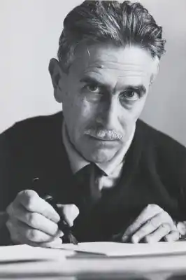

Маріо Солдаті народився 17 листопада 1906 року в місті Турині, Італія. Навчався в єзуїтській школі Istituto sociale. У 1925 році опублікував драму "Пілат". У 1927 році після закінчення факультету історії мистецтв, та написавши дипломну роботу про творчість художника Боккаччо Боккаччіно, працював в Галереї сучасного мистецтва в Турині. Отримав трирічну стипендію Інституту мистецтв в Римі. У 1929 році видав збірку оповідань "Салмакіда" (Salmace). На початку третього року навчання в Римі отримав стипендію Колумбійського університету і переїхав у США.
У 1931 році Маріо Солдаті повернувся в Італію, одружився і влаштувався на роботу секретарем режисера на кіностудії "Cines-Pittaluga". За сприяння президента студії Еміліо Чеккі став сценаристом, продовжуючи співпрацювати з Маріо Камеріні як помічник режисера. У 1934 році після провалу фільму "Сталь" (італ. Acciaio) Солдаті був звільнений з роботи. Він переїхав в Орта-Сан-Джуліо на озері Орта, де впродовж двох років працював над автобіографічною книгою "Перша любов Америка" (італ. America Primo Amore). У 1936 році на прохання Маріо Камеріні повернувся до Рима.
У 1939 році Солдаті зняв перший комедійний фільм "Дора Нельсон". Фільм "Старовинний маленький світ" (італ. Piccolo mondo antico, 1941) приніс йому широку популярність і визнання критики. Аліда Валлі, що зіграла в ньому свою першу драматичну роль була відзначена кубком Вольпі. Вночі 14 вересня 1943 року Маріо Солдаті разом з Діно Де Лаурентісом втікає з Рима в Неаполь. Пізніше він опублікує дорожні замітки по назвою "Втеча в Італію" (італ. Fuga in Italia, 1947). Впродовж дев'яти місяців Солдаті жив у Неаполі, працюючи на міській радіостанції. Після повернення в Рим влаштувався військовим кореспондентом в газети "Avanti!" та "l'Unità" на Готську лінію (одна з основних оборонних ліній у системі німецьких фортифікаційних споруд у Північній Італії часів Другої світової війни). У 1949 році Солдаті зняв фільм "Втеча у Францію" (італ. Fuga in Francia), в роботі над яким також взяли участь Чезаре Павезе та Енніо Флайано. Тоді ж опублікував збірку "Вечеря з командором" з трьох оповідань ("Зелена куртка", "Батько сиріт" і "Вікно"), яка принесла йому літературну премію Сан Бабіла. У 1952 році зняв фільм "Провінціалка" за романом Альберто Моравіа з Джиною Лоллобриджидою в головній ролі, який був номінований на Гран-прі Каннського кінофестивалю. У 1954 році він опублікував роман "Листи з Капрі", за який отримав престижну премію Стрега. У 1955 році Солдаті брав участь у постановці італо-американського фільму Кінга Відора "Війна і мир" за однойменним романом Льва Толстого (був керівником другої знімальної групи та одним з авторів сценарію). Останній фільм Солдаті "Полікарп, офіційний документ" (італ. Policarpo, ufficiale di scrittura, 1959) отримав премію 12-го Каннського фестивалю як найкраща кінокомедія. У 1962 році Солдаті входив до складу міжнародного журі 15-го Каннського міжнародного кінофестивалю, очолюваного японським письменником Тецуро Фурукакі. У 1964 році Сольдаті написав роман "Два міста" (італ. Le due Città), а в 1970-му — "Актор" (італ. L'attore), за якого отримав Премію Камп'єлло. Маріо Солдаті помер 19 червня 1999 року в окрузі Телларо комуні Леричі в провінції Ла Спеція у віці 92 років.